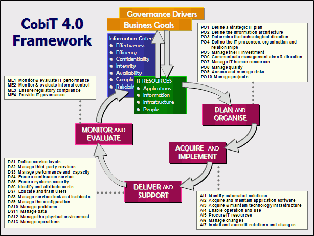

IT Governance @ Deloitte
Aka : How to improve information
About me : Gaël Demette
- 10 years' experience in consulting in a client facing role
- 2 years' experience in articulating technical issues
- Method driven approaches
- Senior developer & business analyst
Your situation
- Audit/Consulting
- More than 200k users
- More than 150 countries
- 80% of the world's largest companies served
Your needs
- Business alignment
- Pertinent informations
- Achieve your objectives
- Keep Human on the top of the stack
One word : CobiT
- Control Objectives for Information and related Technology
- Help to manage risks and investments.
- Help to setup ITIL, ISO, TOGAF and so one...
- Is a framework : It's just some good practices or guidelines, so it's not restrictive
- Process oriented with 34 process on top of 215 activities...
- Is perfect for Audit activities
PDCA remake with COBIT

Cobit
Choose me to get the following :
- IT Human resources Management (PO7)
- Quality Management (PO8)
- Projects Management (P10)
- IT resources Procuration (AI5)
- Engineer training & education (DS7)
- IT Performance evaluation & monitoring (ME1)
- And much more...
IT Human resources Management (PO7)
- Your audit activity is human centred
- ... You need good resources
- ... You need to keep this resources ('cause recruitment has a cost)
Guidelines propositions
- Implement a formal process for the recruitment that meets requirements
- Develop a plan that includes a definition of the skill requirements and preferred professional qualifications
- Develop a guide of retention practices
Quality Management (PO8)
- Your value proposition is defined by the quality of your delivrables
- ... You need to have delivrables with good quality
- ... You need to have a stakeholder satisfied
Guidelines propositions
- Develop a Quality Management system, to encourage a standardised and continuous approach to quality
- Endorse the Quality Management system and effectively communicate the approach
- Regularly review the continued relevance, efficiency and effectiveness then benchmark the result
Projects Management (P10)
- More projects you have, more benefits the company do
- ... You need to be have to scale project number
- ... You need to have more control over your projects
Guidelines propositions
- Develop a Project Management System including funding, project managers, project teams, and so one
- Determine the interdependencies of multiple projects to share common informations or process
- Verify periodically with the client that the current programme meet requirements and adjust if necessary
IT resources Procuration (AI5)
- Your projects need some IT resources
- ... You need a high quality process
- ... You need to optimize the supplier relation
Guidelines propositions
- Define IT procurement policies and procedures and write them
- Implement some approvals at key decision points
- Maintain an asset inventory of software and hardware
Engineer training & education (DS7)
- Engineer must be up to date to audit correctly
- ... You need to track a training plan
- ... You need to know the value of training
Guidelines propositions
- Implement a process to create competency
- Maintain a skills/competency profiles database
- Add training needs into the individual performance plans
IT Performance evaluation & monitoring (ME1)
- Finally, You should know the performance of the IT
- ... You need to know how the service work
- ... You need to know if my job is correctly done :)
Guidelines propositions
- Identify processes that impact the business
- Agree with management on the key performance metrics that need to be analyzed
- Conduct regular reviews
That's all folks
Thanks for your attention